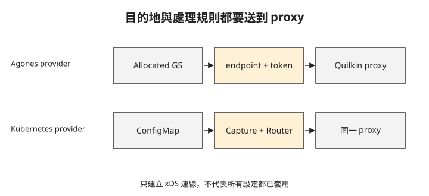
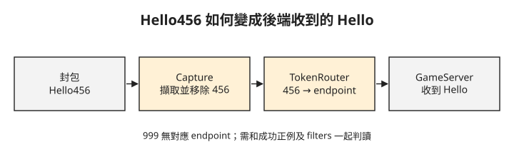

Day 4：Quilkin 能轉送 UDP，為什麼錯誤 token 也會通？¶
玩家已取得一台伺服器，現在平台希望統一使用 UDP proxy 入口。部署後封包有回應，但帶正確 token 與錯誤 token 都會收到 ACK；所有 Pod 看起來也正常。這章會從動態設定與封包處理順序找出差別，確認「能轉送」之外，路由條件也確實生效。
先決定用戶端入口與路由條件¶
Quilkin 是放在遊戲用戶端與 GameServer 之間的 UDP proxy。本章讓用戶端改連同一個 UDP LoadBalancer，再由封包尾端的 token 選擇後端。這是用戶端知道 proxy 存在、會配合附加 token 的部署方式。
固定 proxy 入口可以避免用戶端直接依賴每台伺服器的 node:hostPort，但不會搬移原對戰狀態，也不會自動關閉 Day 1 放行的節點直連路徑。本章只驗證經 proxy 的路由；若需求是禁止繞過 proxy，還需另設後端網路限制並驗證。
先備妥 Day 3 的 Fleet、至少一台 Ready GameServer，以及已開放的測試網路。下面的完整 manifests 使用 default 命名空間，包含對應 ServiceAccount 與 RBAC；實作時保持同一命名空間，若要搬移則需一起調整身分綁定。
動態設定要有目的地，也要有處理規則¶
xDS 是傳遞代理動態設定的一組協定。Quilkin 控制面把 GameServer 資訊轉為 endpoint（可轉送的位址與路由資料），再把封包的處理規則組成 filter chain 傳給 proxy。
這組規則有兩步：Capture 從封包尾端擷取 3 bytes，並移除這段尾碼；TokenRouter 以擷取的 token 選擇對應 endpoint。如果只有目的地、沒有 filters，proxy 可能仍能轉送，卻沒有執行這兩步。
provider 是控制面讀取設定的來源。在本課版本，--provider.k8s.agones 讀 Agones 取得 endpoints，--provider.k8s 讀 ConfigMap 取得 filters。下圖將兩種來源並列，兩者都要傳到 proxy。

少其中一類設定，就不能完成預定的 token 路由。正文會直接使用已補齊兩個 provider 的配置，再透過對照實驗觀察移除其中一個 provider 後的封包回應。
本章使用 Quilkin image ghcr.io/embarkstudios/quilkin:0.10.0-3d8eaef，也就是官方 xDS 範例指定的版本。
這裡用 xDS 架構：一個 quilkin-manage-agones control plane 提供 xDS，三個 quilkin-proxies UDP proxy 對外收 UDP。
步驟 1:部署 Quilkin xDS control plane¶
control plane 的關鍵是同時啟用 Kubernetes provider 與 Agones provider。下面只節錄 Deployment 的 args 與 image，缺少 selector、Pod labels 等必要欄位，不能單獨套用；請先將完整 manifest 存到工作目錄。完整檔案（含 ServiceAccount、RBAC 與 Service）見 xds-control-plane.yaml：
apiVersion: apps/v1
kind: Deployment
metadata:
labels:
role: xds
name: quilkin-manage-agones
spec:
template:
spec:
containers:
- name: quilkin
args:
- --service.xds
- --provider.k8s
- --provider.k8s.agones
image: ghcr.io/embarkstudios/quilkin:0.10.0-3d8eaef
同一份 manifest 也帶入 filter ConfigMap。Capture 抓 suffix 3 bytes，remove: true 表示轉送給 game server 前會把 token 從 payload 剝掉：
apiVersion: v1
kind: ConfigMap
metadata:
name: quilkin-xds-filter-config
labels:
quilkin.dev/configmap: "true"
data:
quilkin.yaml: |
version: v1alpha1
filters:
- name: quilkin.filters.capture.v1alpha1.Capture
config:
suffix:
size: 3
remove: true
- name: quilkin.filters.token_router.v1alpha1.TokenRouter
用 kubectl apply -f xds-control-plane.yaml 部署。control plane pod 要到 1/1 Running；下一步的 proxy 部署好之後，它們的 log 應出現 Connected to management server 與 entering xDS stream loop，表示已建立管理連線；是否取得完整 endpoints 與 filters，還要檢查代理設定及後面的正反例。
步驟 2:部署 UDP proxy pool¶
proxy pool 對外開 UDP 7777，並向 control plane 取 xDS 設定。下面仍是節錄，缺少 Deployment selector 與 Pod labels，不能單獨套用。請先將完整 manifest 存到工作目錄，檔案見 xds-proxy-pool.yaml：
apiVersion: apps/v1
kind: Deployment
metadata:
labels:
role: proxy
name: quilkin-proxies
spec:
replicas: 3
template:
spec:
containers:
- name: quilkin
image: ghcr.io/embarkstudios/quilkin:0.10.0-3d8eaef
args:
- --service.udp
- --provider.xds.endpoints=http://quilkin-manage-agones
ports:
- containerPort: 7777
protocol: UDP
---
apiVersion: v1
kind: Service
metadata:
name: quilkin-proxies
spec:
ports:
- port: 7777
protocol: UDP
targetPort: 7777
selector:
role: proxy
type: LoadBalancer
用 kubectl apply -f xds-proxy-pool.yaml 部署，三顆 proxy 都要到 1/1 Running。查看 Service 取得對外入口：
從這一步開始，client 的固定入口是 EXTERNAL-IP 欄位的位址加上 port 7777，不再是 Day 1–3 的 node IP 與 hostPort。
步驟 3:用 allocation annotation 帶入 token¶
Quilkin 的 Agones provider 會讀 GameServer metadata 裡的 quilkin.dev/tokens annotation，值是 token 的 base64。這裡沿用官方範例的 token：NDU2 是 456 的 base64。這是示範用的短 token，不是安全認證憑證。完整檔案見 gameserverallocation-token.yaml：
apiVersion: allocation.agones.dev/v1
kind: GameServerAllocation
spec:
selectors:
- matchLabels:
agones.dev/fleet: simple-game-server
metadata:
annotations:
quilkin.dev/tokens: NDU2
將設定存成 gameserverallocation-token.yaml，再送出 allocation。下面的查詢名稱請換成回應的 status.gameServerName，不要照抄範例隨機尾碼：
$ kubectl create -f gameserverallocation-token.yaml \
-o jsonpath='STATE={.status.state} GS={.status.gameServerName} ADDR={.status.address}:{.status.ports[0].port}'
STATE=Allocated GS=simple-game-server-ql5ws-b5xr7 ADDR=<NODE-IP>:7499
$ kubectl get gameserver simple-game-server-ql5ws-b5xr7 -o jsonpath='{.metadata.annotations.quilkin\.dev/tokens}'
NDU2
kubectl logs deploy/quilkin-manage-agones 可以看到 control plane 把這顆 server 轉成 endpoint：log 裡依序會有 providers=["agones","k8s"]、applying server <NODE-IP>:7499 tokens=["NDU2"]，以及 InitDone old_num_endpoints=0 new_num_endpoints=1。new_num_endpoints=1 表示控制面已整理出一個目標，不單獨保證所有 proxy 都已接收並套用；後面的封包測試會確認實際資料路徑。
步驟 4:驗正確 token 與錯誤 token¶
先看預期的封包變化。正確 token 是原始的三個 bytes 456，不是 annotation 裡的 base64 字串 NDU2。

Capture 移除尾碼後，遊戲程式應只收到 Hello。<LB-IP> 請換成 quilkin-proxies Service 的外部 IP，再從叢集外送出：
接著只改尾碼，用不在 endpoint 清單內的 999 測試：
驗證中等待期間沒有收到回應，stdout 為空。不同 nc 實作的 UDP 等待行為可能不同；無回應要與剛才相同路徑的正例及已載入的 filters 一起判讀，不能單獨當成網路一定被政策拒絕的證據。
正向與負向兩個測試都要做。只驗 ACK 會漏掉最嚴重的失效模式：proxy 仍然轉發 UDP，但 TokenRouter 根本沒有載入（對照實驗：錯誤 token 仍有回應）。
對照實驗：正確與錯誤 token 都收到原樣回應¶
步驟 1 已啟用兩個 provider。完成步驟 4 後，可以刻意移除其中一個，觀察 endpoints 與 filters 不完整時的差別。
在工作目錄的 xds-control-plane.yaml 中，只移除 control plane Deployment args 裡的 --provider.k8s，保留 --service.xds 與 --provider.k8s.agones，ConfigMap 不變。沿用步驟 1 的 kubectl apply -f xds-control-plane.yaml 重新套用，等 control plane Pod 回到 1/1 Running、proxy 連上 xDS，再重做步驟 4 的兩次封包測試。
症狀：pod 全 Ready、endpoint 也有 token，UDP 封包能通；但 Hello456 回 ACK: Hello456，代表 token 沒被剝掉，Hello999 也回 ACK: Hello999，代表錯 token 也被放行。整個過程沒有錯誤訊息。
根因：移除旗標後，control plane args 只剩 --service.xds --provider.k8s.agones。這會 watch GameServer 產生 endpoint，但不讀 filter ConfigMap，proxy /config 會看到 FILTERS []。反過來只開 --provider.k8s 則有 filters、沒有 endpoint。兩者要同時開。
測試後，在同一份檔案補回 --provider.k8s，將 control plane args 還原成 --service.xds --provider.k8s --provider.k8s.agones，再執行 kubectl apply -f xds-control-plane.yaml。等 control plane Pod 回到 1/1 Running、proxy 連上 xDS，重做步驟 4：Hello456 應收到 ACK: Hello，Hello999 應無回應。
驗收時 proxy /config 必須同時有 endpoints 與 filters，並且一定要做負向測試：錯誤 token 必須無回應。
這個測試還沒有涵蓋什麼？¶
本章只測一個 allocated endpoint 與一組固定三位元組 token。這足以觀察擷取、移除與路由流程，不足以證明多 endpoint 分配、token 碰撞、重送攻擊或玩家身分驗證。正式使用需要設計 token 的產生、有效期、交付與回收，並讓 token 長度和 Capture 設定一致。
另外，proxy 沒有替遊戲實作加密，也沒有消除後端直連入口。需要哪些額外保護，應依遊戲的威脅模型決定，再分別測試。
想一想¶
Hello456收到ACK: Hello456，代表哪個預期的封包處理步驟沒有發生？- 正確與錯誤 token 都沒有回應，能否直接宣布 TokenRouter 正常？還要先確認什麼？
- 已部署 Quilkin，但 Day 1 的 node:hostPort 仍可從 Internet 連入，這算是只允許 proxy 存取後端了嗎？
小結¶
Quilkin 的控制面要同時提供 endpoints 與 filters，proxy 才能依 token 處理封包。正例要檢查尾碼確實被移除，反例則要結合可用的正向路徑與設定一起判斷。這章驗到的是單一 token 的路由流程，還沒有完成玩家認證或後端入口封鎖。Day 5 會加入 Nakama 與 PostgreSQL，處理玩家帳號與持久資料。
延伸閱讀¶
想再深入，可以從這幾份開始：
- Quilkin Agones Provider —— 查
quilkin.dev/tokensannotation、Agones endpoint 與 filter ConfigMap 的來源。 - Quilkin with Agones and Xonotic xDS quickstart —— 對照本章的 xDS control plane、proxy
/config與 token routing 流程。 - Agones third party examples: Quilkin —— Agones 官方把 Quilkin 放在第三方整合案例，說明它在 dedicated game server 路由與存取控制中的位置。
Quilkin 吉祥物為 Embark Studios 之官方資產，此處作社群教學用途。